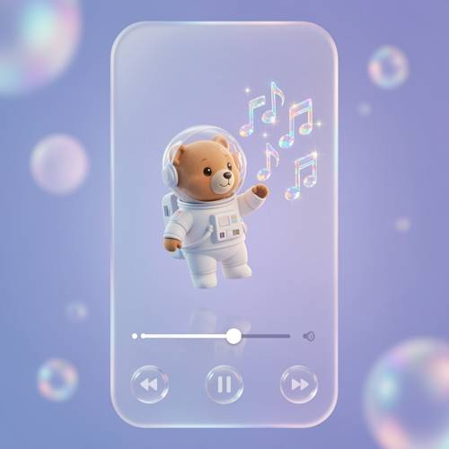
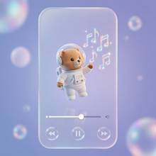

Compound — Please design a playback scene for a music App. A cartoon bear wearing
Please design a playback scene for a music App. A cartoon bear wearing a spacesuit floats to touch the musical symbols made of crystals. The overall style is a glass imitation.


Judge — Direct
- FAILCompound - Imagination — The image features a cartoon bear wearing a spacesuit and floating. It is reaching to touch objects made of crystal. However, these objects are not musical symbols (like notes or clefs); they are vertical, geometric crystal bars of varying heights, resembling a sound equalizer.
- FAILAttribute - Material — The objects in front of the bear are depicted as faceted, transparent crystals with light refracting through them. However, they are not shaped like musical symbols but are instead vertical bars.
- PASSStyle — The overall image has a style that can be described as glass imitation or glassmorphism. This is visible in the transparent crystal elements, the glossy and highly reflective floor, the bear's glass helmet, and the translucent user interface elements.
- PASSAction - Full-body (Character/Anthropomorphic) — The image shows the full body of a cartoon bear. The bear is depicted in mid-air with its body oriented horizontally and its legs bent, giving the impression that it is floating. Its right arm is extended forward in the action of reaching to touch the crystals.
Judge — Continuum
- PASSCompound - Imagination — The image displays an imaginative scene featuring a cartoon bear wearing a white spacesuit with a clear helmet. The bear is suspended in mid-air, appearing to float, while reaching for a group of musical symbols that are also floating. The symbols are rendered with a crystalline texture.
- PASSAttribute - Material — The musical symbols in the image are depicted with a multi-faceted, translucent, and iridescent quality. They refract light, creating sparkles and rainbow-like colors, which strongly resembles the appearance of crystals.
- PASSStyle — The overall design follows a 'glass imitation' style, also known as glassmorphism. This is evident in the main element, a translucent, frosted panel resembling a phone screen that serves as the music player interface, complete with similarly styled playback controls.
- PASSAction - Full-body (Character/Anthropomorphic) — The image shows the full body of a cartoon bear. The bear is depicted in a floating pose, suspended in mid-air with its legs slightly bent. It is performing the action of reaching out with its right arm and open hand towards the musical symbols.
What the agent did
Thinking
Let me generate the image with flux2-klein. The prompt: music app playback scene, cartoon bear in spacesuit floating, touching musical symbols made of crystals, glassmorphism style.
Step 1 — `generate_image`
{
"model": "flux2-klein",
"prompt": "A mobile music app playback screen UI in glassmorphism style: soft frosted glass panels floating over a dreamy lavender-blue gradient background with blurred glowing orbs. At the center of the screen, a cute cartoon bear wearing a round white astronaut spacesuit with a transparent glass helmet floats weightlessly, reaching out one paw to touch a cluster of floating musical note symbols made of translucent crystal \u2014 sparkling prismatic eighth notes and quarter notes that refract rainbow light. Below the bear, a frosted glass playback control bar with a thin progress slider and round glass buttons (rewind, play, forward). Subtle glass reflection, soft glow, pastel colors, clean minimal app UI composition, high quality 3D render."
}Result img_0

Thinking
The result is quite good already: glassmorphism phone screen, cartoon bear in spacesuit with glass helmet, floating crystal musical notes, playback controls with frosted glass buttons, progress bar. This matches the prompt well. The bear's paw reaches toward the crystal notes. Good enough — mark best and stop. Maybe inspect quickly? The image looks clean. I'll mark it.
Model
The first generation already captures the scene very well, so let me verify the details before deciding whether to refine.
Step 2 — `inspect_region`
{
"image": "img_0",
"roi": "the crystal musical notes"
}Result img_1
Step 3 — `inspect_region`
{
"image": "img_0",
"roi": "the playback control buttons at the bottom"
}Result img_2
Thinking
The crystal notes look great — prismatic, faceted, translucent. The playback buttons are clean glass bubbles with rewind, pause, forward glyphs, no text errors. The overall image matches the prompt: glassmorphism music app playback scene, cartoon bear in spacesuit floating and touching crystal musical symbols. Good enough — mark best and stop.
Step 4 — `mark_best`
{
"image": "img_0",
"reason": "Matches the brief completely: glassmorphism music app playback screen, cartoon bear astronaut floating and touching crystal musical notes, frosted glass controls, no text errors."
}Model
The design is complete. Here's the playback scene: **Concept highlights:** - **Glassmorphism UI** — a frosted glass phone screen floats over a soft lavender gradient, with translucent soap-bubble orbs drifting around it for that airy, glass-like depth. - **The hero moment** — a cute cartoon bear in a white astronaut suit with a clear glass helmet floats weightlessly at center screen, one paw stretched out toward a cluster of sparkling **crystal musical notes** — faceted, prismatic eighth and quarter notes that refract rainbow light. - **Playback controls** — a slim glass progress slider with a round knob sits above three bubble-glass buttons: rewind, pause, and skip-forward, all rendered as frosted translucent spheres. - **Reflections** — the bear casts a soft mirrored reflection on the glass surface beneath, reinforcing the glass-imitation aesthetic. The overall mood is dreamy, playful, and weightless — music as a little space adventure. The image is marked as the final result.